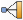

Modelagem de uma viga bi-metálica sujeita a uma variação de temperatura
Objetivo
Este problema é apresentado por Boley e Weiner em Theory of Thermal Stress, pg. 429. Deseja-se obter a deformada e os campos de temperaturas e tensões do elemento apresentado na figura abaixo, composto por duas vigas de espessuras iguais com diferentes coeficientes de expansão térmica.
{kind=link}
| Propriedades | |:-------------------------------------------------:|:----------:| | Comprimento (cm) | 25.4 | | Espessura (mm) | 2.54 | | Condutividade térmica (W/m.k) | 104 | | Módulo de Elasticidade (GPa) | 6.89475 | | Coeficientes de expansão térmica da viga 1 (1/k) | 5.66898E-8| | Coeficientes de expansão térmica da viga 2 (1/k) | 9.77411E-9|
Resolução utilizando o abaqus 6.12 student edition
O procedimento usual de resolução é demonstrado no seguinte fluxograma, cuja ordem pode eventualmente ser alterada por conveniência:

1. Pré-processamento
1.1. Início da análise
- Na caixa Start Session, selecione With Standard/Explicit Model.
- No Menu Model, clique com o botão direito em Model-1 e selecione Rename.
- Digite Viga Bi-metálica e clique em OK.
1.2. Criação da geometria base e definição do tipo de elemento
- No Menu Model, dê um duplo clique em Parts.
- No campo Name digite Viga1.
- Em Modeling Space selecione 2D planar.
- Em Base Feature selecione Shell.
- Em Approximante Size digite 2 e clique em Continue...
{kind=link}
- Na Caixa de Ferramentas, selecione Create Lines: Rectangle (4 Lines).
- Na área de comando insira as coordenadas 0,0 e 0.254,-0.00127.
- Desative a função Create Lines: Rectangle (4 lines) apertando a tecla Esc do teclado e clique em Done.
{kind=link}
- Repita este procedimento para criar a Viga2 inserindo as coordendas 0,0 e 0.254,0.00127.
1.3. Atribuição das propriedades dos materiais
- No Menu Model, dê um duplo clique em Materials.
- Na caixa Edit Material clique em Mechanical, selecione Elasticity e clique em Elastic.
- Em Young’s Modulus digite 6.89475E9.
{kind=link}
- Clique agora em Thermal e em seguida em Conductivity.
- Em Conductivity digite 104.
{kind=link}
- Por fim, clique agora em Mechanical e em seguida em Expansion.
- Em Expansion Coeff Alpha digite 5.66898E-8 e clique em OK.
{kind=link}
- Repita os procedimentos para criar o Material-2, com Expansion Coeff Alpha de 9.77411E-9.
{kind=link}
1.4. Atribuição das propriedades da seção da viga
- No Menu Model, dê um duplo clique em Sections.
- Em Name digite SeçãoViga1.
- Em Category selecione Solid.
- Em Type selecione Homogeneous e clique em Continue...
{kind=link}
- Na janela Edit Section, selecione Material-1.
- Marque a opção Plane stress/strain thickness e digite 0.001.
- Clique em OK.
{kind=link}
- Repita o procedimento para criar a SeçãoViga2, associando o Material-2.
{kind=link}
1.5. Associação das seções
- No Menu Model, abra Parts (2) e em seguida Viga1.
- Clique duas vezes em Section Assigments.
- Selecione toda a viga e clique em Done
- Selecione a SeçãoViga1 e clique em Ok.
{kind=link}
- Repita o procedimento anterior para associar na Viga2 a SeçãoViga2.
{kind=link}
- No Menu Model, abra Assembly e dê duplo clique em Instances.
- Selecione Viga1 e Viga2 pressionando Shift.
- Altere Instance Type para Independent (mesh on instance) e clique em OK.
{kind=link}
1.6. Aplicação das condições de contorno
1.6.1 Apoios
- No Menu Model, dê um duplo clique em BCs.
- No campo Name digite ApoioFixo.
- Em Step selecione Step-1.
- Em Types for Selected Step selecione Displacement/Rotation e clique em Continue…
{kind=link}
- Selecione o ponto médio da viga na extremidade esquerda e clique em Done.
- Na janela Edit Boundary Condition selecione U1 e U2 e clique em OK.
{kind=link}
- Repita este procedimento para criar o ApoioMóvel na extremidade direita da viga, marcando apenas U2.
{kind=link}
1.6.2 Temperaturas
- Novamente, dê um duplo clique em BCs.
- No campo Name digite TemperaturaExterna.
- Em Step selecione Step-1.
- Em Category selecione Other.
- Em Types for Selected Step selecione Temperature e clique em Continue…
{kind=link}
- Selecione toda a viga e clique em Done.
- Na janela Edit Boundary Condition, digite 477.444 no campo Magnitude e clique em OK.
{kind=link}
- No Menu Model, dê um duplo clique em Predefined Fields.
- No campo Name digite TemperaturaInicial.
- Em Step selecione Initial.
- Em Category selecione Other.
- Em Types for Selected Step selecione Temperature e clique em Continue…
{kind=link}
- Selecione toda a viga e clique em Done.
- Na janela Edit Predefined Field, digite 255.222 no campo Magnitude e clique em OK.
{kind=link}
- Na Barra de Contexto, em Module selecione Interaction.
- Clique no icone , selecione Tie em Type e clique em Continue...
{kind=link}
- Clique no icone na barra de ferramentas, selecione a parte superior da viga e clique duas vezes em Done.
- Clique em Node Region, selecione a aresta superior e clique em Done.
{kind=link}
- Novamente, clique em Node Region e em seguida no icone .
- Selecione a aresta inferior e clique em Done.
- Na janela Edit Constraint clique em OK.
{kind=link}
1.7. Criação da malha
- Na Barra de Contexto, em Module, selecione Mesh e clique no icone .
- No Menu Principal, clique em Mesh e posteriormente em Element Type.
- Selecione com o mouse toda a viga e clique em Done.
- Na janela Element Type selecione Coupled Temperature-Displacement em Family.
- Em Geometric Order selecione Quadratic.
- Desmarque Reduced integration e marque Plane Stress.
- Clique em OK e em seguida em Done.
{kind=link}
- No Menu Principal, clique em Seed e posteriormente em Instance.
- Selecione toda a viga e clique em Done.
- Em Approximate global size digite 0.00508, clique em OK e em seguida Done.
{kind=link}
- No Menu Principal, clique em Mesh e posteriormente em Instance.
- Selecione a viga e clique em Done duas vezes.
{kind=link}
2. Processamento
- No Menu Model, dê um duplo clique em Jobs.
- Na janela Create Job clique em Continue...
- Na janela Edit Job clique em OK.
- Abra Jobs e clique com o botão direito em Job-1 e clique em Submit.
- Se aparecer uma janela dizendo “Job files already exist for Job-1. OK to overwrite?”, clique OK.
- Aguarde o processamento dos dados, que estará concluído quando aparecer (Completed) ao lado de Job-1 no Menu Model.
3. Pós-processamento
- No Menu Model, clique com o botão direito em Job-1(Completed) e clique em Results.
- Na Caixa de Ferramentas, clique em Plot Contours on Deformed Shape.
- Na Área de Ferramentas, selecione U e Magnitude.
- No Menu Principal, clique em Viewport e em seguida em Viewport Annotation Options...
- Na janela aberta selecione a aba Legend.
- Clique em Set Font.
- Na nova janela, altere Size para 14.
- Clique em OK nas duas janelas abertas.
{kind=link}
- Na Área de Ferramentas, selecione agora S e S11.
{kind=link}
- No Menu Principal, clique em File e em seguida Save As...
- Dê um nome ao arquivo e clique em OK.